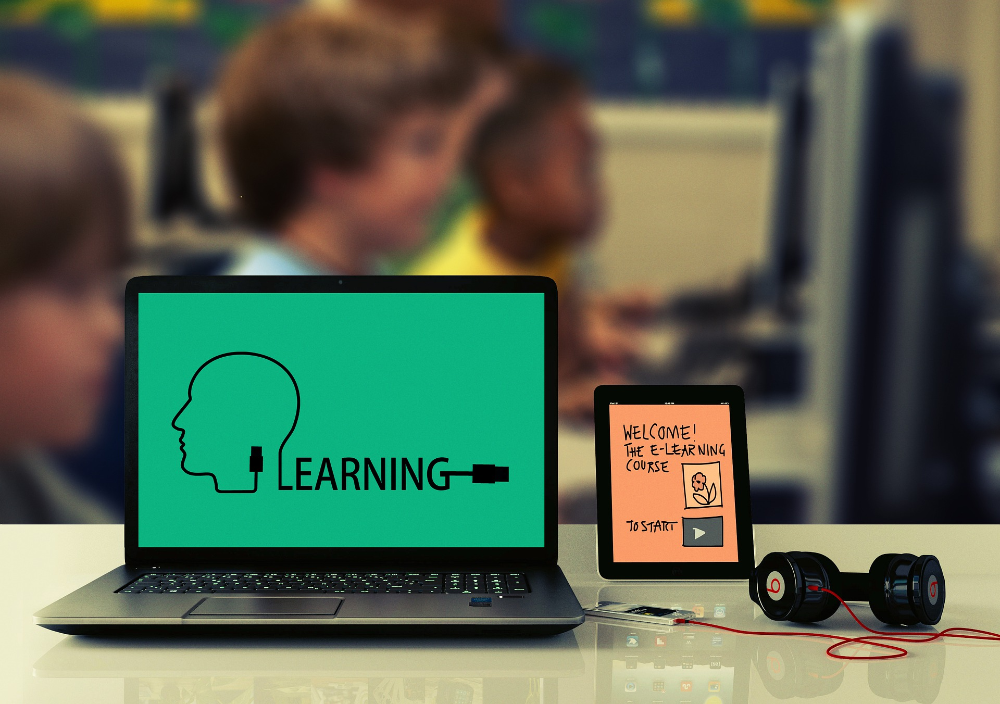

Objectives
Nov 25, 2020
Here we will talk about why students are taking online classes. Due to the current situation in the world, the corona virus pandemic, most of the schools, colleges and universities are closed. To keep everyone safe government of different countries told teachers and students to attend online classes. So that everyone will stay at home and less risk of them getting infected.
Now are the students getting better grades after taking online classes? The students have to prepare themselves about the lecture before attending the class. It was seen that boys, black students, and teenage students had bad grades compared to others [2]. If they don’t pay attention in class then they will not get better grades. In online class the teacher cannot observe the students, cannot make sure if they are understanding the topic or not.
This brings me to my next point, how much are the students actually learning from online class? The students are learning just for the sake of exams and only a few are they learning to remember and imply it in real life. Talking about exams, most students can now cheat easily while giving online exam. Since there’s no invigilator, no one will know which student gave exam honestly and which one did not. So to minimize this, sometimes there is a timer given.
Does the students and teachers prefer online classes or face to face classes? There are both advantages and disadvantages to online class. Most teacher prefer face to face class whereas some students prefer online class. When it comes to student many are not happy about online class but there’s also a significant amount of students who are satisfied with it.
The main points here are:

Problem Statements
Nov 25, 2020
One of the major problems that we will discuss about is the teachers not knowing how to use technology. Many of the university professors are old, school teachers are not accustomed to using digital technology. This creates a problem between the teacher and the students. The students are from either generation Z or millennial so they do not have any problem using the latest technology. Instead of helping the teacher figure out how to use these technology, they look at it as an excuse to not attend class or skip class.
Speaking of skipping classes, these students are very irresponsible. Without any valid reason they are skipping classes, this will cause them their future which they are not aware of. They have become lazy [3].Even if they are aware they are careless and disregardful.
Then there are students who does not have access to internet or technology devices. They may come from unprivileged families. Buying these expensive smartphones or laptops is not their first priority. They somehow manage to attend classes and submit their assignments. Some of them completely stopped attending classes and dropped out of school.
On the other hand these websites get overloaded and stops working as plenty of students are attending class. There’s no proper internet connection [4] .The computer system crashes because of using too many apps. This causes teachers to reschedule classes, they have to change the lesson plans [5] Students might take this as another excuse to stop attending classes.
The main problems here are: